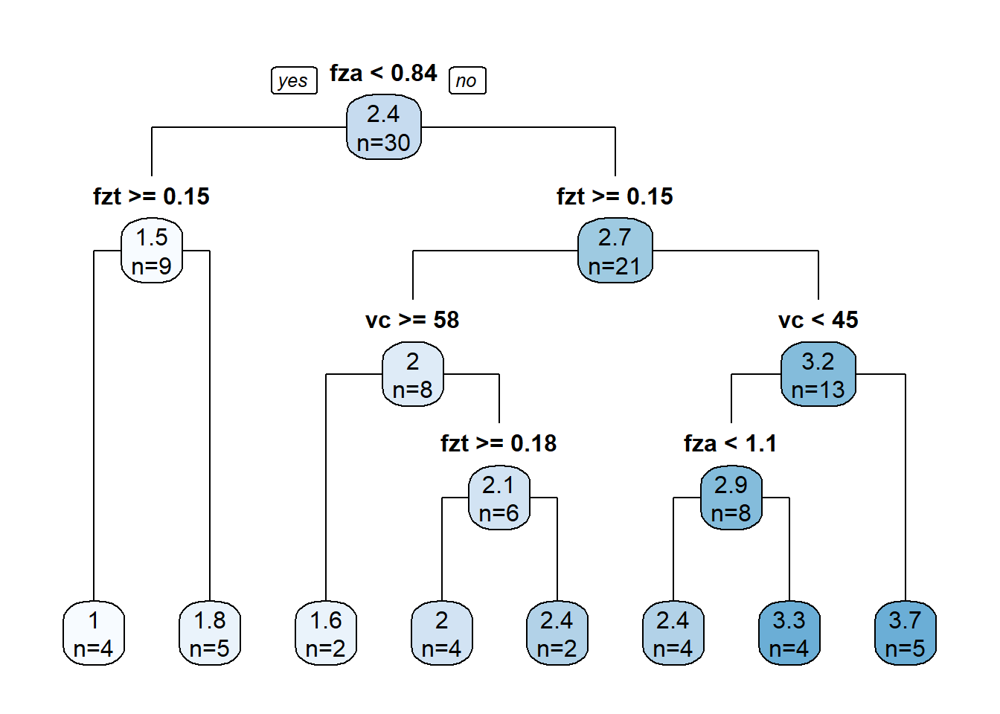

fza fzt vc lc Ra
1 0.50 0.10 40 emulsion 1.915556
2 1.25 0.10 40 emulsion 3.515556
3 0.50 0.20 40 emulsion 1.065556
4 1.25 0.20 40 emulsion 1.965556
5 0.50 0.15 20 emulsion 1.765556
6 1.25 0.15 20 emulsion 3.265556MRR optimization with CART regression and nonlinear optimization
Optimization of the MRR considering roughness learned through the CART regression model
normalized_rec <-
recipe(Ra ~ ., data = plan_train) %>%
step_normalize(fza,fzt,vc) %>%
step_dummy(all_nominal_predictors())
cart_spec <-
decision_tree(cost_complexity = 1e-10,
min_n = 6,
tree_depth = 5) %>%
set_engine("rpart") %>%
set_mode("regression")
cart_wflow <-
workflow() %>%
add_model(cart_spec) %>%
add_recipe(normalized_rec)
cart_final_fit <- fit(cart_wflow, data = plan_train)augment(cart_final_fit, new_data = plan_test) %>%
rsq(truth = Ra, estimate = .pred)# A tibble: 1 × 3
.metric .estimator .estimate
<chr> <chr> <dbl>
1 rsq standard 0.746augment(cart_final_fit, new_data = plan_test) %>%
rmse(truth = Ra, estimate = .pred)# A tibble: 1 × 3
.metric .estimator .estimate
<chr> <chr> <dbl>
1 rmse standard 0.440dt_reg_fit <- cart_spec %>% fit(Ra ~ ., data = plan_train)
dt_reg_fitparsnip model object
n= 30
node), split, n, deviance, yval
* denotes terminal node
1) root 30 27.8886700 2.358889
2) fza< 0.84375 9 1.4338890 1.454444
4) fzt>=0.1458333 4 0.0468750 1.028056 *
5) fzt< 0.1458333 5 0.0780000 1.795556 *
3) fza>=0.84375 21 15.9373800 2.746508
6) fzt>=0.1541667 8 0.8400000 2.015556
12) vc>=58.33333 2 0.1250000 1.615556 *
13) vc< 58.33333 6 0.2883333 2.148889
26) fzt>=0.175 4 0.1025000 2.040556 *
27) fzt< 0.175 2 0.0450000 2.365556 *
7) fzt< 0.1541667 13 8.1926920 3.196325
14) vc< 45 8 3.2171870 2.871806
28) fza< 1.0625 4 1.3475000 2.440556 *
29) fza>=1.0625 4 0.3818750 3.303056 *
15) vc>=45 5 2.7850000 3.715556 *library(rpart.plot)Loading required package: rpart
Attaching package: 'rpart'The following object is masked from 'package:dials':
prunedt_reg_fit$fit %>% rpart.plot(type = 1, extra = 1, roundint = FALSE)
MRR <- function(x){
z <- 2
Db <- 25
Dt <- 14
Dh <- Db-Dt
f1 <- 250*z*(Db^3/(Dh*Dt))*x[3]*((x[1]*10^-3)/x[2])*sqrt((x[1]*10^-3)^2 + (x[2]*Dh/Db)^2)
return(f1)
} g1 <- function(x) {
g1 <- predict(cart_final_fit, new_data = data.frame(fza = x[1],
fzt = x[2],
vc = x[3],
lc = "mql")) - (2 - 0.4396618)
return(g1)
}x_test <- c(0.875, 0.15, 40)
MRR(x_test)[1] 781.3187g1(x_test) .pred
1 0.8802174fitness <- function(x)
{
f <- MRR(x)
pen <- sqrt(.Machine$double.xmax) # penalty term
penalty1 <- max(g1(x),0)*pen # penalisation for 1st inequality constraint
f - penalty1 # fitness function value
}ALGOS <- c("ALO", "DA", "GWO", "MFO", "WOA")
# c("ABC", "ALO", "BA", "BHO", "CLONALG", "CS", "CSO", "DA", "DE", "FFA", "GA", "GBS", "GOA", "GWO", "HS", "KH", "MFO", "PSO", "SCA", "SFL", "WOA")
# Convergiram:
# "ABC", "ALO", "DA", "DE", "GWO", "MFO", "PSO", "WOA"
# Tempo satisfatorio entre os que convergiram:
# "ALO", "DA", "GWO", "MFO", "WOA"# result_meta <- metaOpt(fitness, optimType="MAX", numVar = 3,
# algorithm = ALGOS,
# rangeVar = matrix(c(0.50, 0.1, 20,
# 1.25, 0.2, 60),
# nrow = 2,
# byrow=T),
# control = list(numPopulation = 50, maxIter = 100))
result_meta$result
var1 var2 var3
ALO 0.8437500 0.1977739 60
DA 0.8437500 0.1498404 60
GWO 0.8436987 0.2000000 60
MFO 0.8437500 0.1458333 60
WOA 0.8437498 0.2000000 60
$optimumValue
optimum_value
ALO 1130.075
DA 1130.115
GWO 1130.006
MFO 1130.120
WOA 1130.074
$timeElapsed
user system elapsed
ALO 54.39 1.81 56.32
DA 56.31 1.86 58.63
GWO 53.25 1.61 55.11
MFO 55.34 1.75 57.55
WOA 54.63 1.97 57.44Optimization through Non linear programming
Constraints that satisfies Ra <= 2 - Err_T: 2) fza< 0.84375 9 1.4338890 1.454444
4) fzt>=0.1458333 4 0.0468750 1.028056 *
MRR2 <- function(x){
z <- 2
Db <- 25
Dt <- 14
Dh <- Db-Dt
f1 <- 250*z*(Db^3/(Dh*Dt))*x[3]*((x[1]*10^-3)/x[2])*sqrt((x[1]*10^-3)^2 + (x[2]*Dh/Db)^2)
return(-f1)
} x0 <- c(0.7, 0.175, 40)library(nloptr)
S <- slsqp(x0, fn = MRR2,
lower = c(0.50,0.1458333,20),
upper = c(0.84375,0.20,60),
control = list(xtol_rel = 1e-8))S$par[1] 0.8437500 0.1458333 60.0000000S$value[1] -1130.12